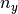
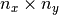

3.4. Tutorial 4: Saving, loading, and analyzing simulation data¶
In this tutorial we describe the input and output data formats of Sesame, and show how to use Sesame’s built-in tools to analyze the solution.
See also
The examples treated here are in the files analyze_data.py and plot_data.py, located in the
examples\tutorial4 directory of the distribution. This tutorial uses the output files from examples\tutorial3 python script, so it’s necessary to copy these gzip data files to examples\tutorial4.
3.4.1. Saving data¶
In the previous tutorials, detailed solution data was saved automatically in the IVcurve() function. It’s also possible to manually save simulations with Sesame’s save_sim() function. This function saves both the system object containing all of the simulation settings, and the solution dictionary. (The solution dictionary contains the keys 'v', 'efn', and 'efp'.) An example of save_sim() is shown below:
sesame.save_sim(sys, results, "my_sim")
The saved output file is named “my_sim.gzip”. Note that the gzip extension indicates the data is compressed, and the data structures are stored using python’s pickle module.
The data can also be saved in a Matlab-readable format (.mat file), by adding fmt='mat' as an additional input argument:
sesame.save_sim(system, result, "my_sim", fmt='mat')
In this case the arrays defining the system properties (including Eg, Nc, Nv, etc) are saved in a system data structure, and the solution ('efn', 'efp', 'v') is saved in a results data structure.
Note
The saved data is “folded” into 1-d arrays. For example, the solution array of a two-dimensional system with x-grid points and  y-grid points is stored as a one-dimensional array of length .
The postprocessing tools packaged with Sesame are built to work with python data files. It’s therefore more convenient to save the data in python format if substantial postprocessing and analysis will be performed.
3.4.2. Loading data¶
Loading a saved simulation is accomplished with the load_sim command. This returns the system object and result dictionary:
sys, result = sesame.load_sim("my_sim")
3.4.3. Analysis of data: the Analyzer object¶
Next we show how to extract and analyze the data computed by the solvers. To facilitate data analysis, Sesame has an Analyzer() class which contains many methods to compute typical quantities of interest, such as total defect, radiative, or radiative recombination, total current, carrier densities, grain boundary recombination, etc. A summary and the descriptions of the methods available via the
Analyzer() object are detailed in
Sec. Core modules.
We’ll demonstrate the use of some of these methods, using the system created in tutorial 3. We start as always by importing sesame and numpy:
import numpy as np
import sesame
Note
In the rest of this tutorial, it’s necessary to copy the output gzip files you obtained in tutorial3 to the examples\tutorial4 directory
Our data analysis will begin with computing carrier densities and currents, and plotting data. In the
code below we load a data file and create an instance of Analyzer class. The Analyzer() object is initialized with a system and a dictionary of
results. This dictionary must contain the key 'v', and can include 'efn', 'efp' when computed.:
sys, results = sesame_loadsim('2dpnIV.vapp_0.npz')
az = sesame.Analyzer(sys, results)
We start with how to obtain integrated
quantities like the steady state current. In the code below we compute the
current for all applied voltages of the IV curve, using the Analyzer() method full_current():
J = []
for i in range(40):
filename = '2dpnIV.vapp_{0}.npz'.format(i) # construct file name
sys, results = sesame.load_sim(filename) # load file
az = sesame.Analyzer(sys, results) # create Analyzer
current = az.full_current() # compute current
J.append(current) # add to array of current values
Non-integrated quantities are often plotted along lines. We define such lines by
two points. Given two points in real coordinates, the method
line() returns the dimensionless curvilinear
abscissae along the line, and the grid sites:
p1 = (2e-4, 0) # [cm]
p2 = (2e-4, 3-6) # [cm]
X, sites = az.line(sys, p1, p2)
Scalar quantities like densities or recombination are obtained either for the entire system, or on a line:
# For the entire system
n2d = az.electron_density()
n2d = n2d * sys.scaling.density # convert to dimension-ful form
n2d = np.reshape(n2d, (sys.ny, sys.nx)) # reshape to 2-d array
# On the previously defined line
n1d = az.electron_density((p1, p2))
n1d = n1d * sys.scaling.density # convert to dimension-ful form
Note
Note that the Analyzer methods return values in dimensionless form. It is therefore necessary to convert to dimension-ful form using the quantities stored in the scaling field of sys. Available dimensions are: density, energy, mobility, time, length, and generation. These dimensions (except mobility) depend on the temperature and the unit length (meter or centimeter) given when creating an instance of the class Builder() (default is 300 K and centimeters).
Vectorial quantities (i.e. currents) are computed either on a line or for the entire system, by component. For instance, to compute the electron current in the x-direction:
# For the entire system
jn = az.electron_current(component='x')
# On the previously defined line
jn = az.electron_current(location=(p1, p2))
We now turn to the treatment of the extended line defects introduced in our system. The following code retrieves the solution along the grain boundary core:
# Line endpoints of the grain boundary core
p1 = (20e-7, 1.5e-4) #[cm]
p2 = (2.9e-4, 1.5e-4) #[cm]
# get the coordinate indices of the grain boundary core
X, sites = az.line(syst, p1, p2)
# obtain solution data along the GB core
efn_GB = results['efn'][sites]
efp_GB = result['efp'][sites]
v_GB = result['v'][sites]
In this code we compute the integrated defect recombination along the grain boundary core:
# Get the first planar defect from the system
defect = sys.defects_list[0]
# Compute the defect recombination rate as a function of position along the planar defect
R_GB = az.defect_rr(defect) # R_GB is an array
# Compute the integrated recombination along the line defect
Rtot_GB = az.integrated_defect_recombination(defect) #Rtot_GB is a number
The attribute of Builder called defects_list is a list of named tuples. This
list stores the parameters of each defect originally added to the system. The
field names of the named tuples are sites, location, dos,
energy, sigma_e, sigma_h, transition, perp_dl. The last
field contains the lattice distance perpendicular to the line of defects. This quantity is used to normalize the recombination velocity and the density of states.
3.4.4. Plotting data¶
To facilitate the
visualization of two- and three-dimensional plots, sesame provides a
few functions (requiring matplotblib) that represent quantities in 2D or
3D. For example, one can visualize the electrostatic potential at zero bias in
3D with:
sys, results = sesame.load_sim('2dGB_V_0.gzip')
az = sesame.Analyzer(sys, results)
az.map3D(results['v']) # units of kT/q
or plot the electron current accross the system:
sys, results = sesame.load_sim('2dGB_10.gzip')
az = sesame.Analyzer(sys, results)
az.electron_current_map()
We finally show how to use native matplotlib functionality to plot the data obtained with the Analyzer() object. In the following code we make plots of the electron density that we obtained earlier:
# points define line perpendicular to GB
p1 = (2e-4, 0) # [cm]
p2 = (2e-4, 3-6) # [cm]
X, sites = az.line(syst, p1, p2)
# make 1d figure
plt.figure(1)
plt.plot(X, np.log(n1d))
plt.xlabel('Position [cm]')
plt.ylabel('Log[n]')
Here we represent the 2-dimensional electron density with a contour plot:
# For the entire system
n2d = az.electron_density()
n2d = n2d * sys.scaling.density # convert to dimnsion-ful form
n2d = np.reshape(n2d, (sys.ny, sys.nx)) # reshape to 2-d array
# make 2d contour plot
plt.figure(2)
plt.contourf(sys.xpts, sys.ypts, np.log(n2d))
plt.xlabel('Position [cm]')
plt.ylabel('Position [cm]')
plt.colorbar()
plt.title('ln(n)')
plt.show() # show figures on screen
3.4.5. Advanced possibilities¶
In case the methods available in the Analyzer() are not
enough (especially in 3D), the module sesame.observables() gives access to
low-level routines that compute the carrier densities and the currents for any
given sites on the discretized system.
In the table below we show the syntax used to get some attributes of the
Builder() that can then be useful:
| Attribute | Syntax |
|---|---|
| grid nodes | syst.xpts, syst.ypts, syst.zpts |
| number of grid nodes | syst.nx, syst.ny, syst.nz |
| grid distances | syst.dx, syst.dy, syst.dz |
The exhaustive list of all accessible attributes is in the
documentation of the Builder() class itself. Note that the
grid nodes are in the units given in the system definition, while the grid
distances are dimensionless.